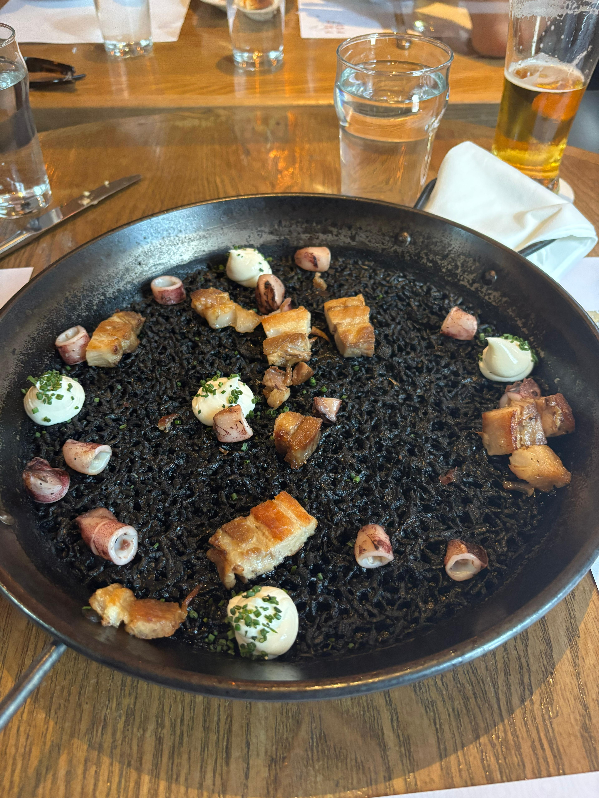

Home
Squid Ink Paella

Description
Black Paella is a stunning and flavorful dish that showcases the rich
culinary traditions of Spain. This unique variation features a blend of fresh seafood,
including squid, shrimp, and mussels, all infused with the briny essence of the sea.
The dish gets its signature black color from squid ink, which not only adds visual
appeal but also imparts a deep, savory flavor.
The base of Black Paella is a fragrant mixture of sautéed onions,
garlic, and bell peppers, combined with tender rice that absorbs the
delicious seafood stock and spices. Finished with a sprinkle of fresh parsley and
served with lemon wedges, this dish is perfect for special occasions or a cozy dinner.
Its combination of textures and flavors will transport your taste buds straight to the
Mediterranean coast. Enjoy the experience of sharing this vibrant dish with friends and family!
This recipes is generated with GPT-4o-mini. If the dish turns out to be a culinary catastrophe, the author of this website holds no accountability.
Ingredients
- Seafood
- 500g (1 lb) squid, cleaned and cut into rings
- 250g (0.5 lb) shrimp, peeled and deveined
- 250g (0.5 lb) mussels, cleaned
- 1 cup (240ml) fish or seafood stock
- Vegetables
- 1 onion, finely chopped
- 2 garlic cloves, minced
- 1 red bell pepper, diced
- 1 tomato, grated or finely chopped
- Rice
- 1.5 cups (300g) Bomba or Arborio rice
- 2-3 tablespoons olive oil
- 2-3 tablespoons squid ink
- Seasoning
- 1 teaspoon smoked paprika
- Salt and pepper to taste
- Fresh parsley, chopped (for garnish)
- Lemon wedges (for serving)
Steps
- Heat olive oil in a large paella pan or skillet over medium heat.
- Add the chopped onion and cook until translucent.
- Stir in the garlic and bell pepper, cooking for another 2-3 minutes.
- Add the grated tomato and cook until the mixture is thick.
- Stir in the squid rings and cook for 2-3 minutes until they start to turn opaque.
- Add the rice to the pan, stirring to coat it in the oil and vegetables.
- Pour in the seafood stock and squid ink, mixing well.
- Add smoked paprika, salt, and pepper. Bring to a boil.
- Reduce the heat to low and let it simmer without stirring for about 15-20 minutes.
- After about 10 minutes, add the shrimp and mussels, pushing them into the rice.
- Continue to simmer until the rice is tender and the liquid is absorbed. If necessary, add a little more stock or water during cooking.
- Once done, remove the paella from heat and cover with a clean kitchen towel for about 5 minutes.
- Garnish with fresh parsley and serve with lemon wedges on the side.
- Enjoy your Black Paella!